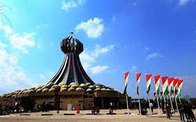

Halabja, a city in the Kurdistan Region of Iraq, holds a poignant place in history due to the tragic events that unfolded in 1988. The infamous Halabja chemical attack, perpetrated by Saddam Hussein's regime, resulted in the loss of thousands of lives and left an indelible mark on the collective memory of the Kurdish people. Today, Halabja stands as a symbol of resilience and remembrance, with monuments and museums commemorating the victims of this devastating attack. Despite the tragic past, the city has undergone reconstruction and revitalization efforts, showcasing the strength and determination of its residents to rebuild and move forward. Halabja serves as a testament to the resilience of the Kurdish people in the face of adversity and the pursuit of a peaceful and prosperous future.
